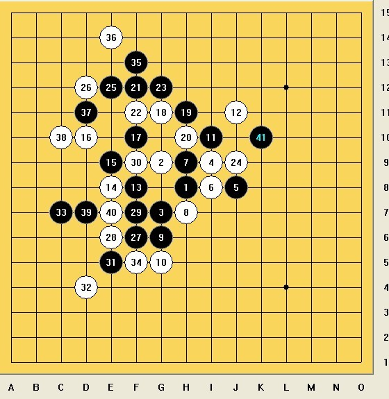

中国五子棋国际团体公开赛总结
#1 中国五子棋国际团体公开赛总结作者：天天才 发表时间：2012-5-7 0:30:02
中国五子棋国际团体公开赛总结
这次这个比赛的信息我基本上不多了解，直到报名截止才接到有关部门的电话，当时还是很担心拖后腿的，毕竟半年没下过棋，再说山口规则我连打点都还没去了解过，由于朱建锋和曹冬对我的信任度还是挺高的，给我鼓劲，所以我决定了去参加这个比赛，感受下老外的棋。
4月29号晚上是我开始问打点问开局的第一天，结果都是溪峡月7,8打这样的内容，觉得我记不住，所以就干脆直接睡觉了。30号对冈部宽我开局，我选择的浦月6打，原因是赛前和非鸟下过一盘。

这是给我自信的一盘，对手没交换，我执黑。为什么说是给我自信的一盘呢，因为这个棋我从15< #2 Re:中国五子棋国际团体公开赛总结作者：怪 发表时间：2012-5-7 0:50:15 #3 Re:中国五子棋国际团体公开赛总结作者：游戏人间 发表时间：2012-5-7 1:28:56 #4 Re:中国五子棋国际团体公开赛总结作者：没事摆石子玩 发表时间：2012-5-7 6:12:27 #5 Re:中国五子棋国际团体公开赛总结作者：极地剑客 发表时间：2012-5-7 8:31:56 #6 Re:中国五子棋国际团体公开赛总结作者：屏蔽 发表时间：2012-5-7 8:56:11